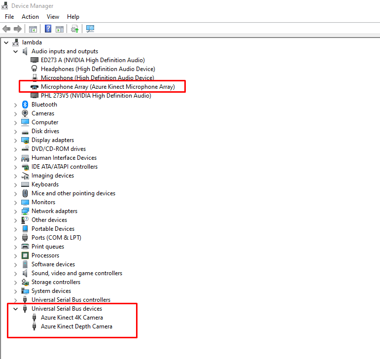

5. Setup Azure Kinect DK#
5.1. References#
This application is made possible by the previous work of following projects:
Kyung-Su Kang (@unerue | pykinect-recorder)
@etiennedub et al. | pyk4a
Gutekanst et al. | Azure-Kinect-Python
5.2. Requirements#
5.2.1. Hardware#
Azure Kinect DK
USB to USBC Cable
USB to Barrel connector
5.2.2. Software#
Azure Kinect SDK 1.4.1 (see Kinect SDK)
Important: use 1.4.1
Optional for now: Azure Kinect Body Tracking SDK 1.0.1 (see Kinect Body Tracking SDK)
5.3. Installation#
Install software from chapter requirements (keep path as default).
Add following paths to Windows Environment Variables
Win Key + R
rundll32.exe sysdm.cpl,EditEnvironmentVariables
Add to Path:
C:\Program Files\Azure Kinect SDK v1.4.1\sdk\windows-desktop\amd64\release\bin
C:\Program Files\Azure Kinect Body Tracking SDK\sdk\windows-desktop\amd64\release\bin
C:\Program Files\Azure Kinect Body Tracking SDK\tools
Please check by open the windows device manager (kinect shoud should be visible as microphone array and the depth camera + 4K camera as USB serial bus):

5.4. Usage#
If all steps in the chapter Installation are made the application can be started.
Toggle the slider on the top right corner to establish a connection to the Azure Kinect DK.
The triangle starts the “viewer” mode without recording.
By pressing “#” or via button (red dot), the recording can be started.
5.5. Important notes#
Data cable must be plugged to USB 3.0 (or newer)
The .mkv video data is a raw video footage which is very data intensive (7GB per Minute by default settings), please only record on a fast and big SSD drive for the best performance and no storage issues.
5.6. Executable (pyinstaller bundling)#
To bunde the application to a portable .exe on windows with following steps:
If not already created/installed:
python -m venv venv
.\venv\Scripts\activate
pip install -r requirements.txt
Bundling:
cd Kinect
pyinstaller --clean --onefile --add-data "pykinect_recorder;pykinect_recorder" --name Kinect main.py
The bundled .exe can be found in the dist folder after finish.
The documentation of the pyinstaller what the arguments are used for can be found here: Pyinstaller Docs